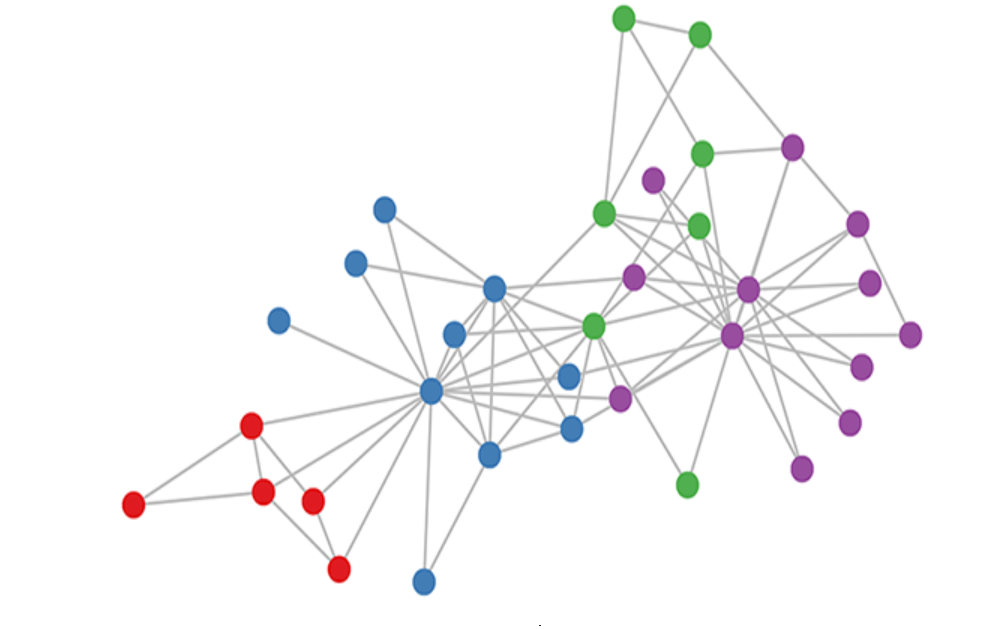

图（Graph）是用于建模事物之间联系的一类数据结构，在各类场景中都得到了广泛应用，例如社交媒体数据、传感器数据、科学数据等。但由于图结构的不规则性，这些应用很难得到快速处理，因此图计算也成为了大数据和人工智能时代的核心挑战之一。

一个社交网络图示例
图卷积神经网络（Graph Convolutional
Network，GCN）作为众多图神经网络的基石之一，也是目前最流行的图神经网络模型之一。GCN凭借对图数据的处理能力以及简单的网络结构，被迅速地应用于交通预测、蛋白质性质预测、推荐系统等领域。加速GCN的推理过程对推进各领域的研究以及人们的现实生活都有重要意义。
CCFSys中国图计算大赛由中国计算机联合会主办，旨在激发学生对于图计算领域的兴趣，发掘图计算相关的人才，培养学生的创新精神，鼓励学生开发新的图计算解决方案。今年比赛的目标是寻找图卷积神经网络推理过程的最佳优化算法，以提升图卷积神经网络中推理过程的效率。